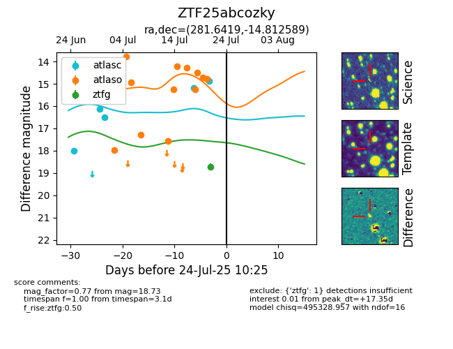

Target ZTF25abcozky at 2025-07-24 10:25, see:
FINK: fink-portal.org/ZTF25abcozky
Lasair: lasair-ztf.lsst.ac.uk/objects/ZTF25abcozky
ALeRCE: alerce.online/object/ZTF25abcozky
alt names
ZTF25abcozky (ztf,fink)
coordinates:
equatorial (ra, dec) = (281.6419,-14.81259)
galactic (l, b) = (19.1603,-5.64084)
photometry
last atlasc=14.86, atlaso=14.78, ztfg=18.73
5 atlasc, 15 atlaso, 1 ztfg detections
